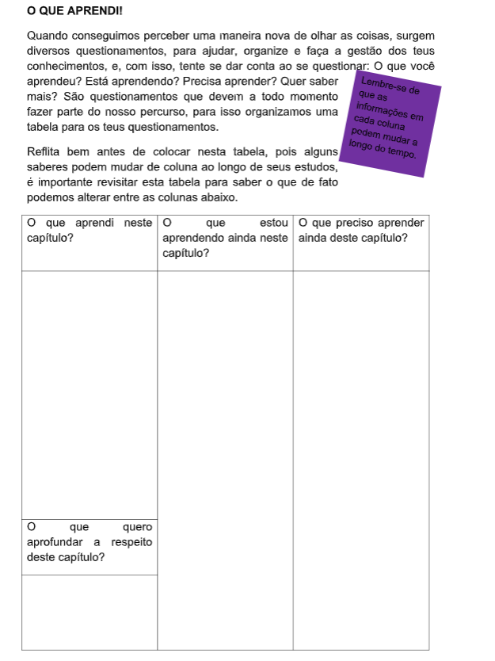
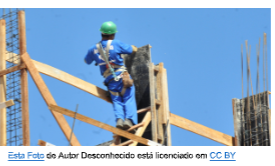
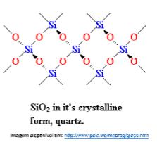
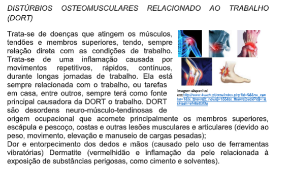
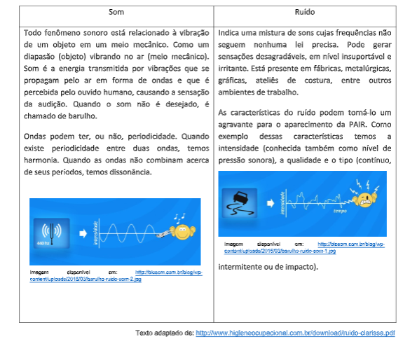
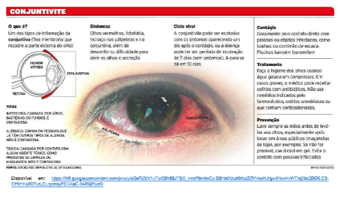

Capítulo 2
Reações Químicas na construção Civil
Qual a relevância das reações na construção civil? Mas de que forma estas reações ocorrem? Como podemos identificar os fatores que favorecem uma reação? Todas as reações apresentam o mesmo mecanismo?
CONTEXTUALIZANDOA maioria dos materiais em contato com o meio ambiente forma um sistema termodinamicamente instável. Com a única exceção dos metais nobres (ouro, prata e em contato com o ar devem reagir e transformarem-se em óxidos, hidróxidos ou outras formas semelhantes. Para alguns metais tais como alumínio, magnésio, cromo etc., tal transformação implica numa  grande redução da energia livre. Assim, de acordo com a termodinâmica, os metais não poderiam ser utilizados numa atmosfera como a atmosfera terrestre. Certas velocidades de reação são muito lentas e permitem a utilização de metais no cotidiano. Problemas de deterioração de materiais decorrentes de reações Químicas aparecem nas mais variadas atividades da vida econômica, sendo conhecidos casos na indústria petroquímica, naval, química, construção civil, automobilística, nos meios de transporte, em todas as etapas do sistema elétrico, em telecomunicações, em odontologia, obras de arte, monumentos históricos etc. O quadro abaixo apresenta algumas formas de deterioração.
(Re) Construindo conceitosDiariamente é possível observar a ocorrência de várias reações químicas no nosso dia-a-dia. O amadurecimento de uma fruta, o processo de respiração, a digestão, o cozimento de alimentos, o crescimento das plantas, enfim. A formação de substâncias novas a partir de outras que existiam inicialmente denominamos de Transformação Química, e este capítulo tratará destas questões. Basearemos nossas atividades em questionamentos.
1ª Pergunta: O que é relevante para ocorrer uma reação química?Para responder a este questionamento, é muito importante destacar que em uma reação química ocorre uma transformação de substâncias em outras e os elementos químicos não são modificados, apenas as substâncias. Somente no processo de reação nuclear os elementos são transformados em outros. De uma modo geral para ocorrer uma reação precisamos de reagentes para que se possa obter produtos.
2ª Pergunta: Com podemos representar as reações químicas, com seus reagentes que dão origem a produtos?  3ª Pergunta: Como identificar a ocorrência de uma reação?  5ª Pergunta: Como Classificar as reações químicas, quanto ao número de reagentes e produtos?Tradicionalmente, as reações químicas podem ser identificadas de acordo com o número de reagentes e produtos em cada lado da equação química que representa a reação

